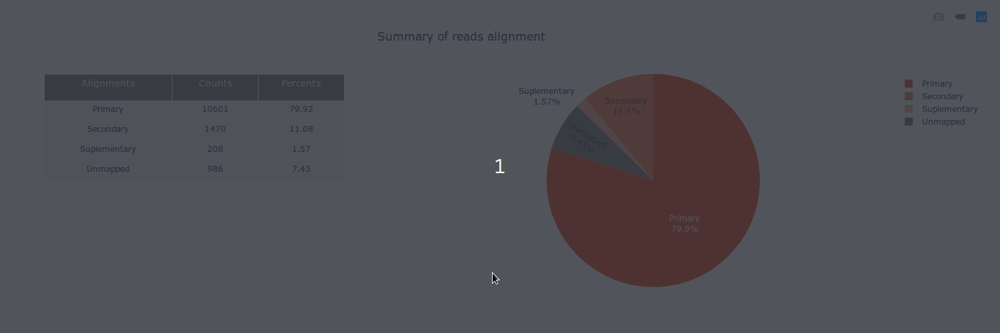

Welcome to pycoQC documentation

PycoQC computes metrics and generates interactive QC plots for Oxford Nanopore technologies sequencing data
PycoQC relies on the sequencing_summary.txt file generated by Albacore and Guppy, but if needed it can also generates a summary file from basecalled fast5 files. The package supports 1D and 1D2 runs generated with Minion, Gridion and Promethion devices and basecalled with Albacore 1.2.1+ or Guppy 2.1.3+. PycoQC is written in pure Python3. Python 2 is not supported.
Great tutorial with detailed explanations by Tim Kahlke available at https://timkahlke.github.io/LongRead_tutorials/QC_P.html
Gallery

 ]
]
 ]
]


